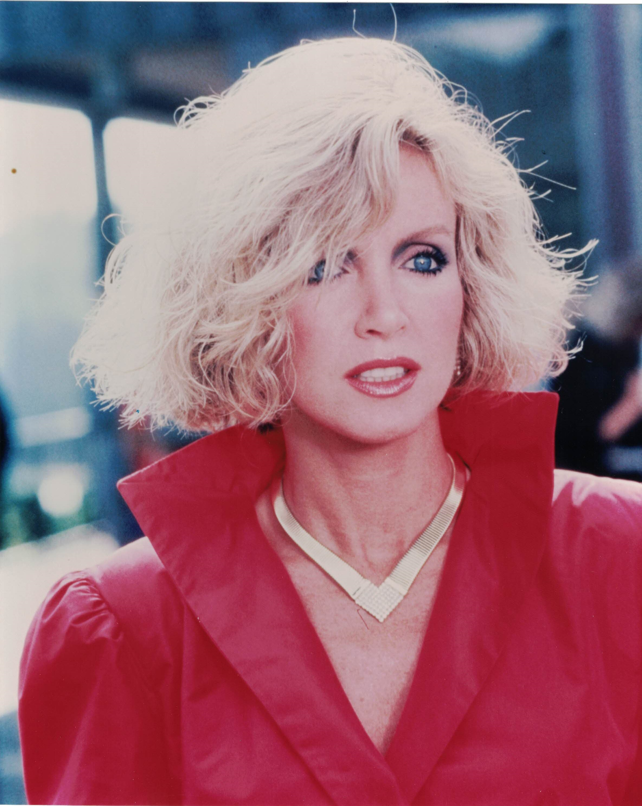

Product No. HEC-0086
$10.99
Shipping: $8.95
Description
8x10 color photograph
Full Description
Donna Mills is an American actress and producer best known for her long-running role as Abby Cunningham on the prime-time television drama "Knots Landing." Born Donna Jean Miller on December 11, 1940, in Chicago, Illinois, she began her career on stage before moving into television and film. Mills appeared in numerous television programs during the 1960s and 1970s and gained wider attention in the psychological thriller "Play Misty for Me" (1971), starring Clint Eastwood and Jessica Walter. She also appeared in many television movies and guest roles before landing the part that would define much of her career. In 1980, Mills joined "Knots Landing" as Abby Cunningham, an ambitious, glamorous, and often manipulative character who quickly became one of the show's most popular figures. She remained a regular cast member until 1989 and later returned for reunion projects. Her performance helped establish her as one of the best-known stars of 1980s prime-time television. Mills continued working steadily after "Knots Landing," appearing in television movies, independent films, and series such as "General Hospital." She has also worked as a producer and remained active in entertainment for decades. Donna Mills' association with "Knots Landing," along with her extensive television and film career, has made her photographs, autographs, and memorabilia popular with collectors of classic television, soap operas, and 1980s entertainment.
Condition
Excellent condition